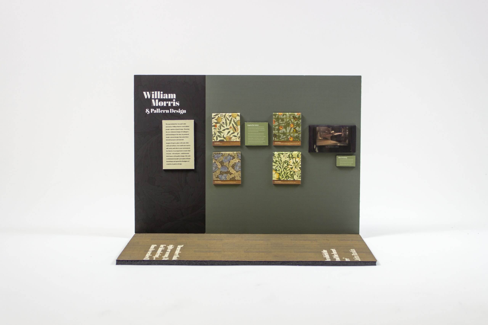
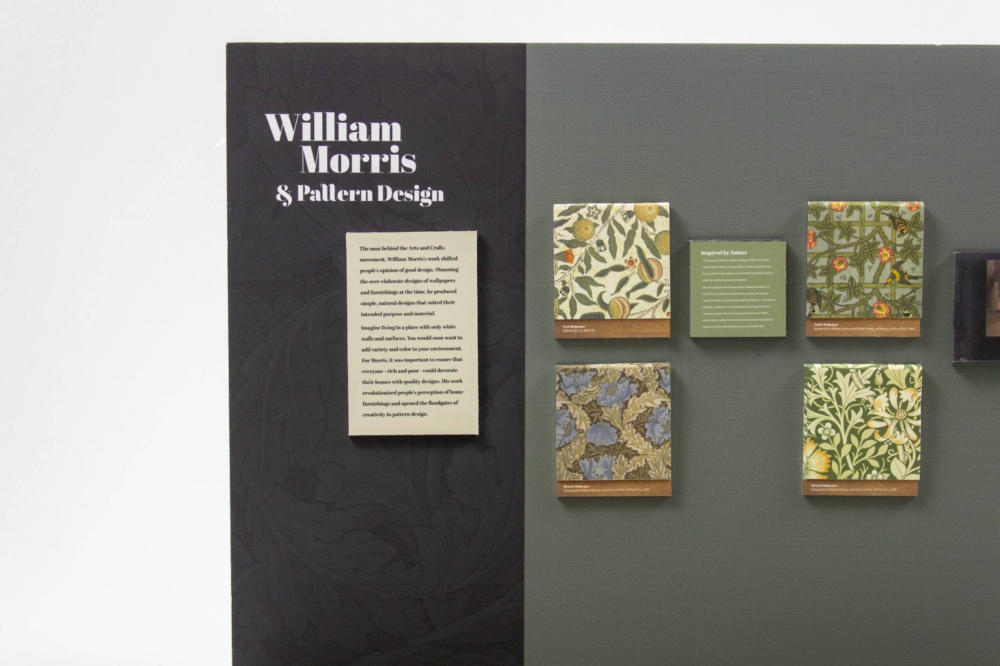
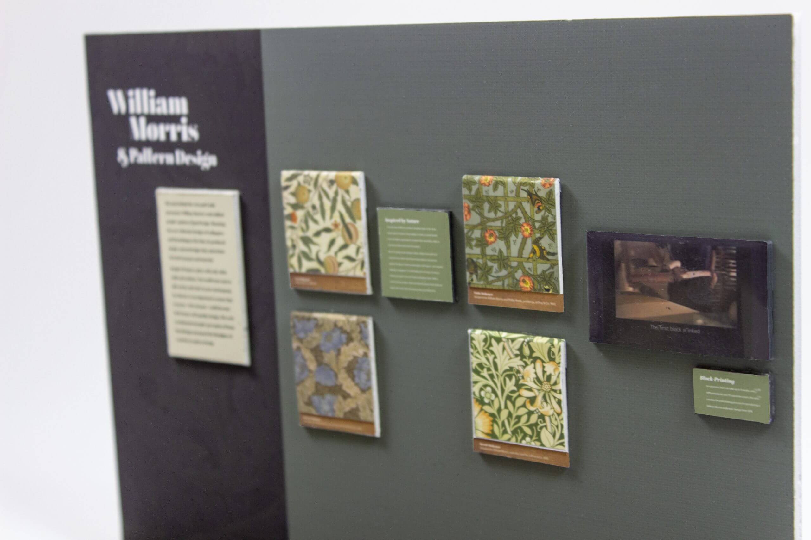
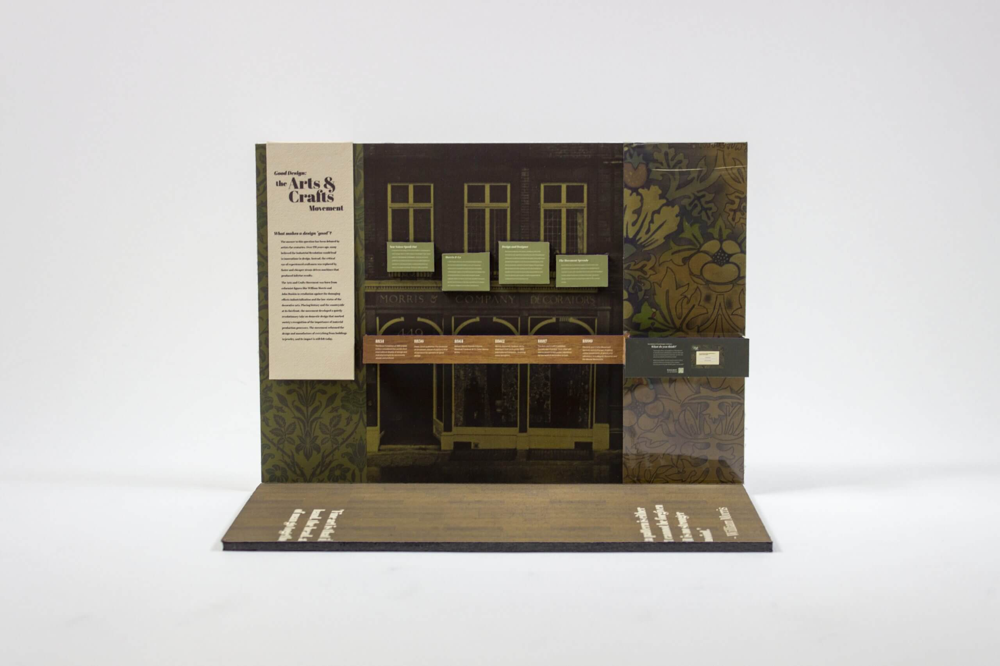
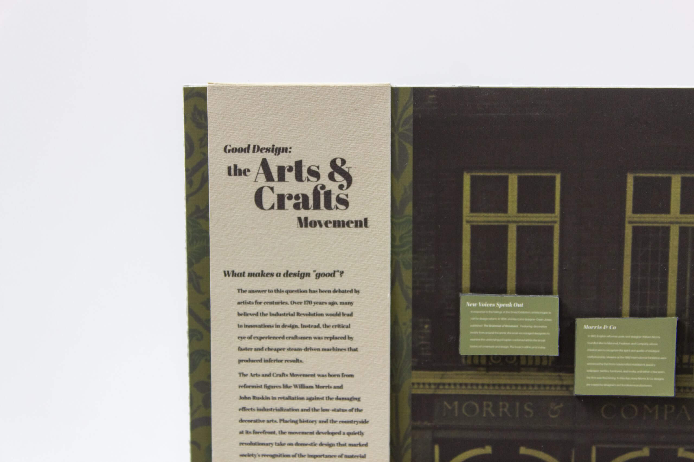
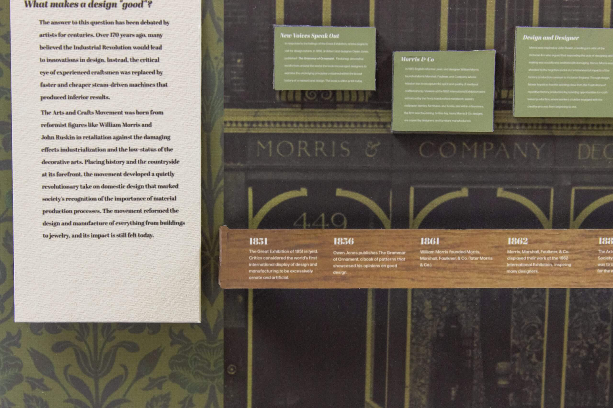
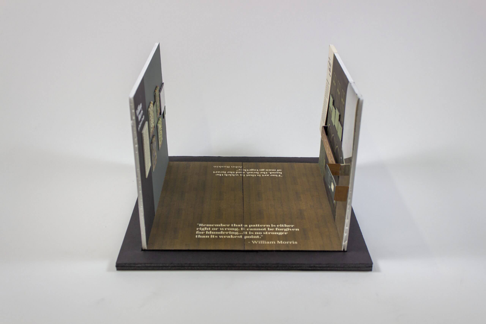

For my Exhibition Design final, I had to design an exhibit on the Arts and Crafts Movement. I
decided to frame my exhibition around the ongoing debate of “Good Design,” and how William
Morris and the Arts and Crafts Movement played into that.
This was without a doubt the hardest thing I’ve done at Drexel so far, but it was also the most
fun I’ve had working on a project.
One wall of the Exhibition is centered on covering the Arts and Crafts Movement, while the other
wall covers William Morris and his contributions to pattern design.

William Morris Wall
Because the Arts and Crafts Movement was all about appreciating hand-created designs, I paid
special attention to the materials I used my exhibition. The pattern designs are printed on
fabric to create a tactile quality, encouraging the viewer to feel the patterns on the wall.
The use of wood throughout the exhibition demonstrates how the Arts and Crafts designers looked
to nature and the countryside for inspiration.

William Morris Wall (close up)

The television screen on the right side plays a silent video from the Victoria &
Albert
Museum
showing the complex process of printing a William Morris Pattern design.

Arts and Crafts Movement Wall
This side of the exhibition introduces viewers to the debate of Good Design. The exhibition
shows how the Arts and Crafts movement emerged as a reaction to the decline in design because of
machine-production.
The right portion of the wall is an edge to edge screen, showing a data-driven version of one of
William Morris’s patterns. On the iPad mounted onto the green panel, viewers can answer
questions and contribute to the Good Design debate. Their answers are reflected in the colors
shown in the data-driven pattern.

The introductory “What makes design good?” panel is screen-printed onto a canvas
fabric, which will be hung from the wall. The use of canvas adds a tactile quality to the
exhibition and encourages viewers to feel the fabric.

I did hours of meticulous research and wrote all the body copy myself, taking my
time to condense
the information into small, easy to read chunks.

Scale Model (1 inch = 1 foot) with both walls facing each other.
The wood paneled flooring brings a sense of unity to both walls, creating a sense of interior
space. Impactful quotes from William Morris and John Ruskin are laid on the floor, grabbing the
attention of viewers walking from either direction.